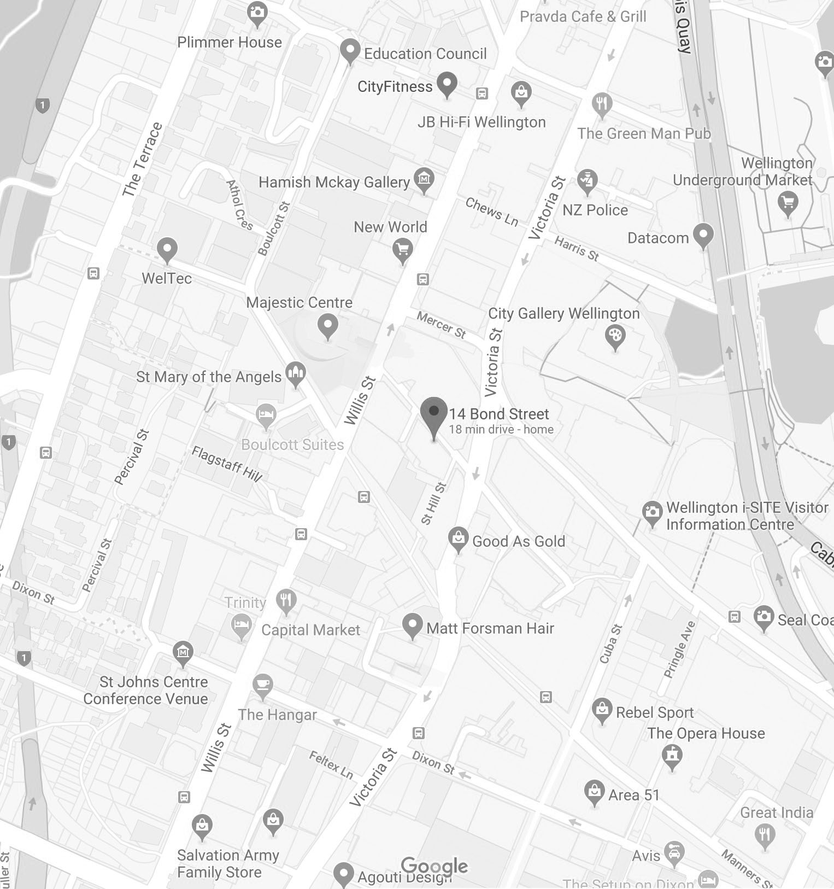

OFF the TAB
Fork Brewing / Odell Brewing Colorado Colourado, 6.5% abv
Fork Brewing and Burning Sky Ls Amis Due Brassage, 6.2% abv
Fork Brewing Base Isolator APA, 6.1% abv
Fork Brewing Base Jumper, 6.1% abv
Fork Brewing BE High, 5.2% abv
Fork Brewing BE Low, 5% abv
Fork Brewing Big Tahuna, 6.7% abv
Fork Brewing Bohemian Hipster, 5% abv
Fork Brewing Burton Ernie Nitro, 6.7% abv
Fork Brewing Cherry 2000, 5% abv
Fork Brewing Chockabock, 6.8% abv
Fork Brewing Daily Bread, 5% abv
Fork Brewing Florapalooza, 7.3% abv
Fork Brewing Galactic Gose, 4.5% abv
Fork Brewing Godzone Beat, 6% abv
Fork Brewing Gold Medal Famous, 4.9% abv
Fork Brewing Golden Mile, 4.5% abv
Fork Brewing Hardpour Corn, 4.5% abv
Fork Brewing I.P.YAY, 7% abv
Fork Brewing Lemming Drop, 5.2% abv
Fork Brewing Long Wheat Cloud, 5.3% abv
Fork Brewing Low Blow, 4.4% abv
Fork Brewing Ma is White, 5.4% abv
Fork Brewing Miso Stout, 4.2% abv
Fork Brewing Murder of Crows, 9.8% abv
Fork Brewing Pitch Fork, 5.5% abv
BOTTLES
Fork Brewing / Odell Brewing Colorado Colourado, 6.5% abv
Fork Brewing and Burning Sky Ls Amis Due Brassage, 6.2% abv
Fork Brewing Base Isolator APA, 6.1% abv
Fork Brewing Base Jumper, 6.1% abv
Fork Brewing BE High, 5.2% abv
Fork Brewing BE Low, 5% abv
Fork Brewing Big Tahuna, 6.7% abv
Fork Brewing Bohemian Hipster, 5% abv
Fork Brewing Burton Ernie Nitro, 6.7% abv
Fork Brewing Cherry 2000, 5% abv
Fork Brewing Chockabock, 6.8% abv
Fork Brewing Daily Bread, 5% abv
Fork Brewing Florapalooza, 7.3% abv
Fork Brewing Galactic Gose, 4.5% abv
Fork Brewing Godzone Beat, 6% abv
Fork Brewing Gold Medal Famous, 4.9% abv
Fork Brewing Golden Mile, 4.5% abv
Fork Brewing Hardpour Corn, 4.5% abv
Fork Brewing I.P.YAY, 7% abv
Fork Brewing Lemming Drop, 5.2% abv
Fork Brewing Long Wheat Cloud, 5.3% abv
Fork Brewing Low Blow, 4.4% abv
Fork Brewing Ma is White, 5.4% abv
Fork Brewing Miso Stout, 4.2% abv
Fork Brewing Murder of Crows, 9.8% abv
Fork Brewing Pitch Fork, 5.5% abv
Information
Contacts
Phone (04) 472 0033
Email info@forkandbrewer.co.nz
OPENING HOURS
Mon - Wed 11:30am - Late
Thu 11:30am - Late
Fri 11:30am - Late
Sat 11:30am - Late
Sun Closed

© 2018 Hanjan, Inc. All rights reserved